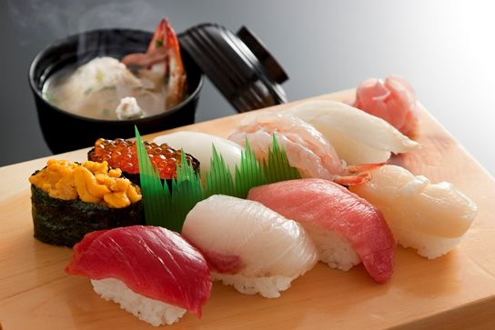
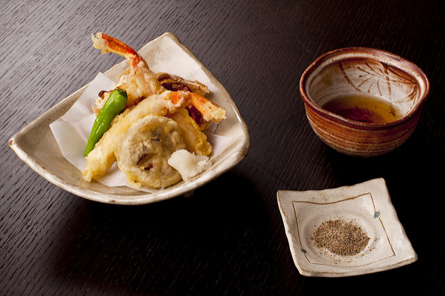
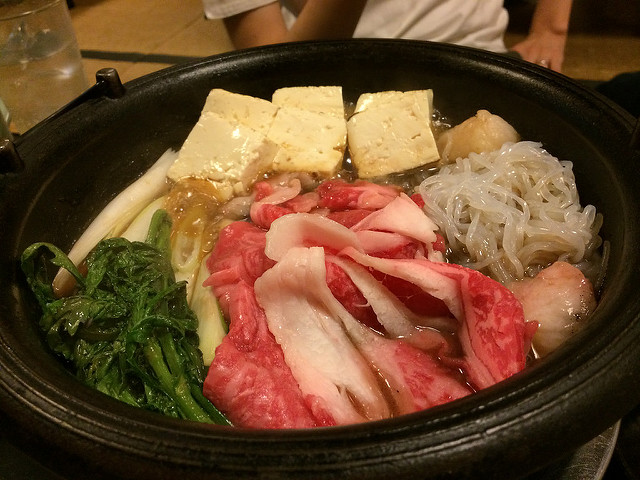

天ぷら
天婦羅，是將海鮮、新鮮蔬菜和其他食材，裹上蛋汁和麵粉調製的麵糊，然後再加以油炸的日本料理。雖然在所有的日式餐廳都能找到這道料理，但若您希望吃到最頂級的天婦羅的話，建議您選擇天婦羅專賣餐廳，因為那裡的天婦羅是在您點餐之後（不論您點餐內容多寡）才會將食材下鍋油炸，然後在炸好之後立刻為您送上桌，因此酥脆的香氣、口感絕對會讓您讚不絕口。
2017.10.26

すき焼き
壽喜燒，通常食材會有肉片和各種蔬菜...等，以特殊的日式醬汁（割下，是一種由醬油、砂糖與味醂等混合的醬汁）作為湯底，最後沾上生雞蛋食用的一種日本料理。
在關東或關西的壽喜燒，其作法和使用食材仍有些許差異，但都是沾取生雞蛋後食用。若您想吃很多的上等牛肉，建議您可以選吃這道料理喔！
2017.10.26